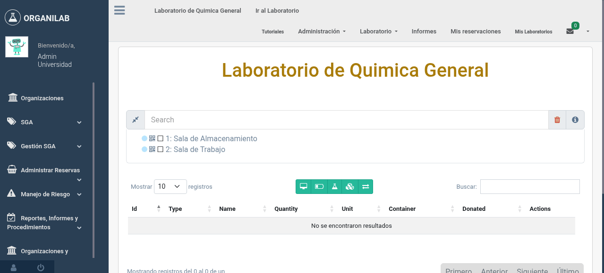
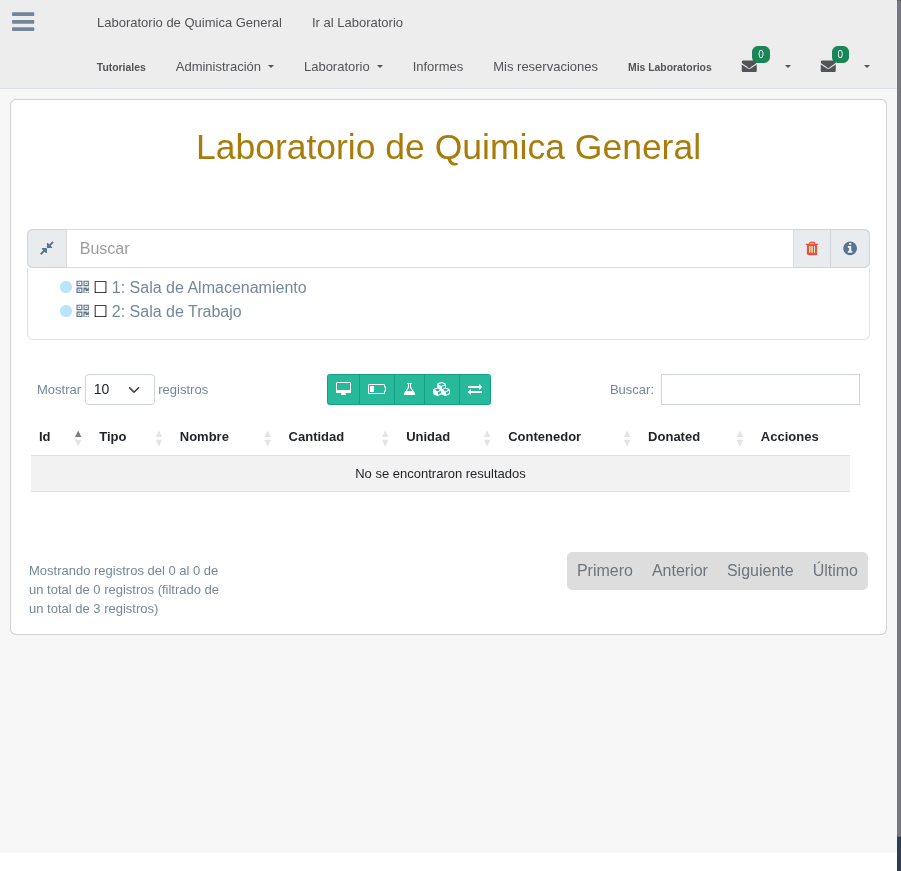

4. Objetos del Laboratorio
Los objetos son los elementos individuales que se almacenan en los estantes del laboratorio. Organilab clasifica los objetos en tres tipos: reactivos, materiales y equipos. Cada tipo tiene propiedades específicas que permiten un control detallado del inventario.
Características de los Objetos
Los objetos pueden tener varias características que permiten un control detallado del inventario.

Formulario de registro de una característica de objeto
Tipos de Objetos
En Organilab, todo elemento del laboratorio se registra como un Objeto que se clasifica en uno de tres tipos. Esta clasificación determina las propiedades disponibles y los controles que se aplican.
Reactivo
Sustancias químicas utilizadas en los procesos del laboratorio. Incluyen ácidos, bases, solventes, sales y cualquier compuesto químico registrado.
- Tienen fecha de vencimiento
- Pueden ser peligrosos
- Pueden ser precursores
- Se miden en unidades de volumen o masa
Material
Insumos y utensilios utilizados para realizar los procedimientos del laboratorio. Son elementos físicos no químicos.
- Probetas, pipetas, matraces
- Guantes, gafas de seguridad
- Papel filtro, embudos
- Se miden generalmente en unidades
Equipo
Instrumentos y aparatos utilizados para medición, análisis u otros procesos de laboratorio.
- Balanzas analíticas
- Espectrofotómetros
- Centrífugas, agitadores
- Se registran como unidades individuales
Propiedades Comunes del Objeto
Todos los objetos, independientemente de su tipo, comparten un conjunto de propiedades básicas que los identifican en el sistema:
| Propiedad | Descripción | Ejemplo |
|---|---|---|
| Código | Identificador único del objeto en el sistema | RQ-001, MT-045, EQ-012 |
| Nombre | Nombre principal del objeto | Ácido Clorhídrico, Probeta 100ml, Balanza Analítica |
| Sinónimo | Nombres alternativos o comerciales | HCl, Muriatic Acid |
| Descripción | Detalle adicional sobre el objeto | Ácido clorhídrico concentrado al 37% |
| Es público | Indica si el objeto es visible para usuarios de otros laboratorios | Si / No |
Objeto en el Estante (ShelfObject)
Cuando un objeto se coloca en un estante, se crea un registro llamado ShelfObject que vincula el objeto con su ubicación física y registra las propiedades específicas de esa instancia particular. Un mismo tipo de objeto puede existir en múltiples estantes con diferentes cantidades y lotes.
| Propiedad | Descripción | Aplicable a |
|---|---|---|
| Cantidad | Cantidad actual del objeto en ese estante | Todos |
| Unidad de medida | Unidad en que se mide la cantidad (ml, g, unidades, etc.) | Todos |
| Lote (batch) | Número de lote del fabricante para trazabilidad | Reactivos, Materiales |
| Estado físico | Estado del material: líquido, sólido en polvo, sólido cristalino, gas, etc. | Reactivos |
| Fecha de vencimiento | Fecha de expiración del reactivo (reactive_expiration_date) | Reactivos |
| Límite mínimo | Cantidad mínima antes de generar una alerta de reabastecimiento | Todos |
| Límite máximo | Cantidad máxima permitida en ese estante | Todos |

Formulario de registro de un objeto en un estante mostrando los campos de cantidad, lote y estado físico
Estados Físicos
Para los reactivos, Organilab permite registrar el estado físico del material. Los estados disponibles son:
- Líquido — Sustancias en estado líquido a temperatura ambiente
- Sólido en polvo — Sustancias sólidas finamente divididas
- Sólido cristalino — Sustancias sólidas en forma de cristales
- Sólido granular — Sustancias sólidas en forma de gránulos
- Gas — Sustancias en estado gaseoso
Límites de Cantidad
Los límites de cantidad permiten establecer alertas y controles sobre el inventario. Cuando la cantidad de un objeto cae por debajo del límite mínimo, el sistema puede generar una alerta para indicar que es necesario reabastecer. El límite máximo previene el almacenamiento excesivo en un estante.
Límite Mínimo
Cuando la cantidad disponible baja a 500 ml o menos, el sistema alerta que es necesario solicitar más reactivo para evitar la interrupción de los procedimientos del laboratorio.
Límite Máximo
Se establece un límite máximo de almacenamiento para cumplir con las regulaciones de seguridad sobre cantidades permitidas de sustancias inflamables en un mismo espacio.
Códigos QR de Objetos
Al igual que los muebles, cada objeto en un estante (ShelfObject) genera automáticamente un código QR único. Este código permite:
- Identificar rápidamente un objeto escaneando con un dispositivo móvil
- Acceder a toda la información del objeto (cantidad, lote, vencimiento, ubicación)
- Facilitar los procesos de inventario y auditoría
- Imprimir etiquetas con el código QR para colocar en los envases
Objetos Contenedores
Un ShelfObject puede funcionar como contenedor de otros objetos. La propiedad container permite establecer una relación donde un objeto contiene a otros objetos más pequeños. Esto es útil para:
- Registrar un kit de materiales como un objeto que contiene varios componentes
- Agrupar muestras dentro de un recipiente mayor
- Representar cajas o paquetes que contienen múltiples unidades individuales
Sustancias Peligrosas y Precursores
- Es peligroso (is_dangerous) — Indica que la sustancia es peligrosa según el Sistema Globalmente Armonizado (SGA). Esto activa la visualización de pictogramas de peligro y frases H/P asociadas.
- Es precursor (is_precursor) — Indica que la sustancia está clasificada como precursor químico. Esto activa controles adicionales de trazabilidad y requiere reportes periódicos a las autoridades competentes.
Las sustancias marcadas como precursores están sujetas a regulaciones especiales que requieren mantener un registro detallado de todas las entradas, salidas y usos. Organilab automatiza la generación de estos reportes, como se explicará en la sección de reportes.

Vista de detalle de un reactivo mostrando las marcas de peligroso y precursor con sus pictogramas SGA
Acciones sobre Objetos en Estante
Desde la vista de laboratorio, cada objeto en estante expone un conjunto de botones de acción que permiten operar sobre él. A continuación se describen brevemente las acciones disponibles.
| Acción | Descripción |
|---|---|
| Reservar |
Permite reservar una cantidad del objeto para uso futuro. Al reservar,
el sistema registra la solicitud y notifica al responsable del laboratorio.
Esta funcionalidad está explicada en detalle en el Capítulo 5: Reservaciones. |
| Agregar | Registra un ingreso de cantidad al objeto en estante (entrada de inventario). Permite especificar cantidad, lote y otros datos del ingreso. |
| Transferir | Inicia una transferencia del objeto hacia otro laboratorio de la organización. Ver Sección 5: Transferencias. |
| Disminuir | Registra una salida o consumo de cantidad del objeto en estante (descuento de inventario). |
| Bitácora | Muestra el historial completo de acciones realizadas sobre el objeto en estante: ingresos, disminuciones, transferencias, ediciones y cualquier otro cambio registrado. Útil para auditoría y trazabilidad del inventario. |
| Editar |
Permite modificar los datos del objeto en estante. Los campos
disponibles varían según el tipo de objeto:
|
| Mantenimiento |
Opción exclusiva para equipos. Centraliza la gestión del ciclo de
vida del equipo a través de cuatro secciones:
|
| Administrar contenedor |
Permite gestionar el contenedor asociado al reactivo: asignar,
cambiar o remover el contenedor en el que se almacena la sustancia.
Esta opción está disponible únicamente para reactivos. |
| Mover a otro estante | Mueve el objeto desde su estante actual a otro estante dentro del mismo laboratorio. Si el objeto está en un contenedor, se puede mover junto con él. |
| Descargar reporte | Genera y descarga un reporte del objeto en estante con el detalle de sus propiedades, cantidades y características registradas. |
| Eliminar | Elimina el registro del objeto en el estante. Esta acción no puede deshacerse y requiere el permiso correspondiente. |